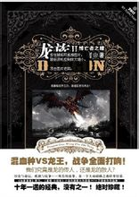

《龙族》是中国作家江南连载在《漫客·小说绘》上的幻想小说。
该作品讲叙了少年路明非在申请国外大学时收到了来自芝加哥远郊处的一所私立大学：卡塞尔学院的邀请函，随着路明非同学坐上去往芝加哥的CC1000次列车，踏上了与龙族争锋的征程。
创作背景编辑
江南2000年正式开始写作。江南个人更喜欢史诗奇幻。其本人喜欢读历史，看了《魔戒》以后启发了江南写中国化的史诗奇幻的想法。江南觉得中国古代的素材很多，可以写进故事里对写作者的能力也是有要求的。读者发现它和现实有联系，但又和现实中的故事不一样，会很感兴趣的。
史诗奇幻很考验作者的控制力。江南要考虑得很细致，比如物理因素，你要画地图，知道世界怎么分布，海流怎么流，四季变化和阳光变化是怎样的，这就是一个新的创世纪。同时还要考虑宗教、哲学、种族和语言。
剧情简介编辑
他以为他将这样度过一生，他以为他始终只是个衰小孩。但是，一封来自卡塞尔学院的录取通知书改变了他的一生。云层里透出神秘的吟唱：你也有神奇的父母，你也有热血的同伴，你的血管里流动着龙族的血液。而你的目标将是 —— 屠龙。
龙族Ⅰ火之晨曦
该作品以一个少年的冒险之旅为故事核心，展现了龙的世界中的神秘与宏大。主角路明非只是一个普通的懵懂高中生，一封来自卡塞尔学院的来信改变了他平淡的人生。在热血与神秘的呼唤下，在爱与梦想的抉择下，他毅然选择了未知。黑色的直升机划过天际，陌生国度的大门向他缓缓开启，平凡的中国小孩走上不平凡的屠龙之路。而遥远的卡塞尔学院却处处透着神秘－－奇怪的课程、搞笑的学长、疯狂的教师、骄傲的同学等。路明非刚刚进入学校就遭遇了无数的怪事。但是，随之而来的挑战也开始了，等级考试、言灵考验、地图搜索。龙的世界也终于在水下露出了神秘面纱。
龙族Ⅱ悼亡者之瞳

该作品是一个关于屠龙者的故事，这也是一个关于少年们成长的传奇。
衰仔路明非在生日那天收到了同学聚会的邀请，也同时接受了来自卡塞尔学院的任务。而特立独行的楚子航却独自承担了全部的任务，并且圆满完成。二人立即飞往芝加哥，开始了新的学期。
在芝加哥，他们邂逅了漂亮师妹夏弥。同时，昂热校长来到此地，带领路明非以亿元天价拍下了“七宗罪”。而当他们在六旗游乐园的过山车上开始庆祝吐槽时，一个意外发生了——过山车面临离奇崩塌，楚子航不得不冒险使用“爆血”技能将事故化解。而因为血统的不稳定，他也面临着来自校董会的审判，就在审判结束后，猎人网站却传来了令人震惊的消息——大地与山之龙王在北京苏醒。
全世界的混血种精英纷纷飞往北京，而酒徳麻衣团体也在北京布下了"杀龙之局“：魔兽世界副本、英雄级路明非账号、全方位监控。路明非和他的伙伴们纷纷潜入北京地铁，开始了新一轮的屠龙历程。
龙族Ⅲ黑月之潮
时间是1991年，邦达列夫来到西伯利亚，赫尔佐格博士让他看到了坚冰里的龙骨，雷娜塔还在和黑色巨蛇对话。这一刻，离路明非、楚子航、凯撒包机降临日本执行任务提前了二十一年。而所有故事、所有命运的源头，却是从这个时间开始的。路明非一行人开始了在日本的屠龙之旅。